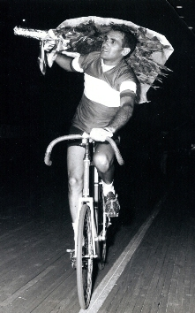

La carriera
Dieci anni a battersi con i grandi del mezzofondo — Timoner, Kock, De Paepe, Proost, Verschuren, Oudkerk.
Dal punto di vista sportivo posso dire di avere ottenuto le più grandi soddisfazioni che un atleta possa mai ottenere. Per dieci anni mi sono battuto con i grandi del mezzofondo: Timoner, Kock, De Paepe, Prost, Marsell, Ouderk, Vershuren, tutti nomi che hanno fatto la storia di questa specialità dagli anni ’50 ai ’70.

Palmarès
- 1959–61 1° classificato, Campionato italiano dilettanti
- 1962–64 2° classificato, Campionato italiano professionisti
- 1965–67 1° classificato, Campionato italiano professionisti
- 1967 1° classificato Campionato italiano professionisti — 3° ai Campionati del Mondo, Amsterdam
- 1968 1° classificato, Campionato d’Europa dietro Vespa, Madrid
- 1969 1° classificato Campionato italiano professionisti — 3° ai Campionati del Mondo, Anversa
- 1970 1° classificato, Campionato italiano professionisti
- 1971 1° classificato Campionato italiano professionisti — 3° ai Campionati del Mondo, Varese
Dal 1976 al 1979, finita la mia carriera dietro motori sono salito in sella alle moto facendo l’allenatore per Pietro Algeri, Roberto Dotti e Bruno Vicino, conquistando 4 Titoli Mondiali, due secondi e quattro terzi posti.
Dal 1986 al 1989 sono stato direttore sportivo della Gewiss-Bianchi insieme a Moreno Argentin, Emanuele Bombini, Davide Cassani e Paolo Rosola.
Dal 1994 faccio parte della Commissione Tecnica Professionisti della Federazione Italiana Ciclistica.